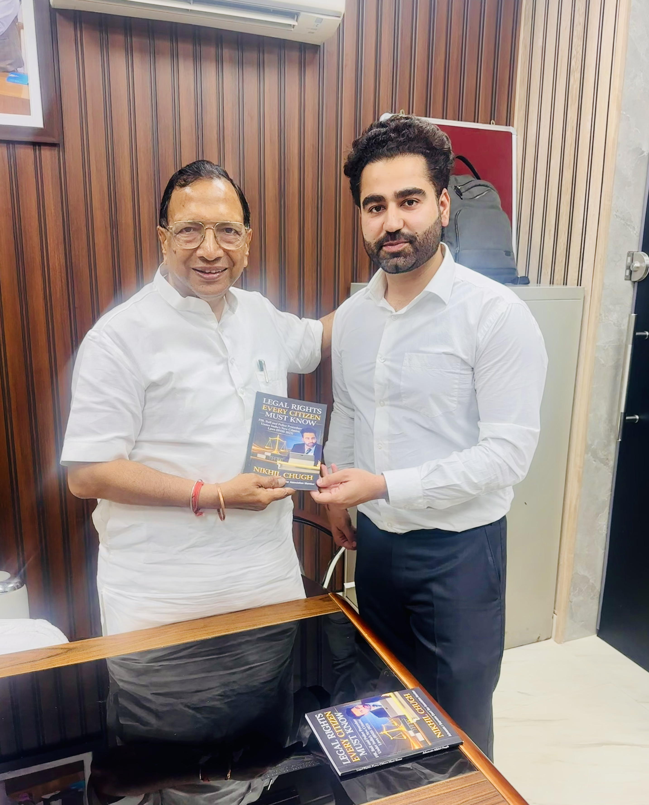
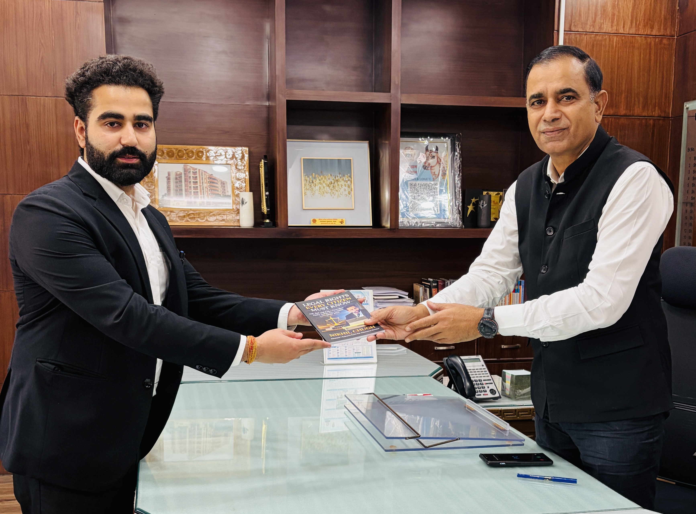
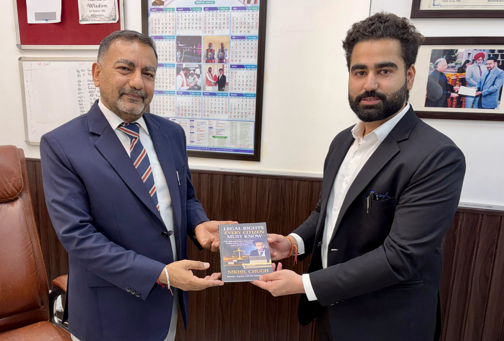

As part of a structured legal awareness initiative, Advocate Nikhil Chugh has presented his book to key institutional authorities representing the Legislature, Executive, and Judiciary.
Strengthening legal awareness through institutional engagement.
Book presented to Hon’ble MLA Panipat City, Sh. Parmod Kumar Vij, highlighting the importance of spreading legal awareness at the grassroots level.

Legal awareness initiative with MLA Parmod Kumar Vij, Panipat.
The book was presented to DC Panipat Sh. Virender Kumar Dahiya (IAS), emphasizing the role of administration in promoting citizens' legal rights.

Book presentation to DC Panipat as part of legal awareness mission.
Book presented to Sh. Sundeep Singh, District & Sessions Judge, Panipat, reinforcing the importance of legal literacy in the justice system.

Judicial engagement for strengthening legal awareness.
This initiative aims to make legal knowledge accessible to every citizen.
Efforts are underway to place this book in school libraries to educate students about FIR, Bail, and Police Procedure.
The book is also available at the District Bar Association, Panipat Library for public and professional access.
Vision: Legal Awareness for Every Citizen.